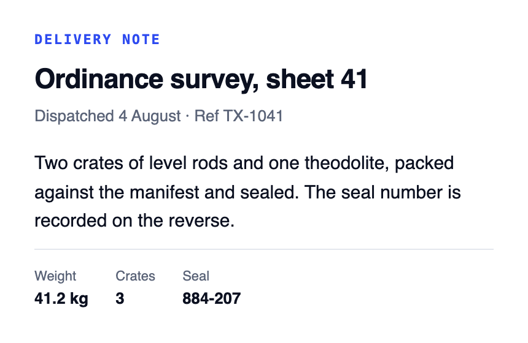

The visible page is SnapDOM's own capture. A real PDF text layer adds selection, search, copy and working links without asking another renderer to rebuild your layout.

Drag across both. The right-hand PDF contains a selectable text layer.
Every file below came directly from an earlier pre-release build. Open one, select a paragraph, copy it, search it or click a link. They prove the core interaction, but will be regenerated from the final gated bundle before launch so codecs, tagging and sizes match.
The page image is SnapDOM's capture. The plugin places a second, invisible text layer over it using positions derived from SnapDOM's final serialized clone. No headless browser or separate layout engine rebuilds the page.
Register the plugin once and every capture gains toPdf() alongside
toPng() and toCanvas(). It reuses the existing capture rather than
running a second capture engine.
import { snapdom } from '@zumer/snapdom'
import pdf from './vendor/snapdom-pdf.mjs'
snapdom.plugins(pdf())
const shot = await snapdom(document.querySelector('#report'), {
scale: 2, dpr: 1
})
const blob = await shot.toPdf({
page: 'a4', // 'fit' | 'a4' | 'a5' | 'letter' | …
margin: 36, // points
header: { left: 'ACME', right: 'Q3 ledger' }, // real text, or pass an element
pageNumbers: true, // or { format, align, size, color }
codec: 'auto', // smaller JPEG or lossless Flate
tagged: true, // structure, not a PDF/UA badge
download: 'report.pdf' // also downloads it
})On first PDF export, the plugin reads SnapDOM's final serialized clone, not the
original live DOM, so real node removal/replacement stays aligned. Page regions are rasterized
lazily and cached for later exports. Geometry-preserving final-artifact replacements stay aligned;
aspect-preserving width/height scaling is allowed, while incompatible viewBox, root paint/layout or
intrinsic-aspect changes fail instead of guessing coordinates. For secrets, remove or replace the
node/text; never treat an overlay or blur as redaction. Capture-model
options (formValues, shadow, breakAvoid, outline)
belong in pdf({ ... }).
'fit' · one page the size of the element, or
a3 / a4 / a5 / a6 / b4 /
b5 / letter / legal / tabloid /
executive, or [width, height] in points.'portrait' or 'landscape'.24.auto keeps the smaller JPEG or lossless Flate image.0.92. It changes nothing while the lossless candidate wins, which on page artwork is until roughly 0.5.true.true. Turn it off and you get
the file in the left-hand panel above.http:,
https:, mailto: and tel: annotations. true.true. Set false for an
image-free PDF that keeps the enabled text, links and structure. Element headers, footers and
watermarks are then omitted; cover/back pages keep semantics without their raster.input / textarea / select
values in the layer. true.true.true.true.true.@font-face binaries, subset to the
glyphs the document drew. true. 'full' embeds unsubsetted;
false embeds nothing.false. RTL and complex scripts stay on the raster.true.
false keeps their values in the invisible layer instead.thead pixels and text.{ left, center, right }, each of which can be a
function of the page number. Either way it is drawn as real text: selectable, searchable,
crisp at any zoom. Pass an element instead and it is captured, for when you need a logo.
Either way it takes its height out of the printable area rather than sitting over it.true, or
{ format, align, size, color, font }. Drawn as real PDF text rather than
captured, so it stays crisp at any zoom and is searchable like the rest. It sits in the
bottom margin, under a footer if there is one.false.{userPassword, ownerPassword, permissions}. AES-256 (R6).
The password is what protects the file; the permission flags are a request a viewer may honour.
Needs https or localhost.{title, author, subject, keywords, creator, created, modified}
→ /Info and XMP. Dates are written only when you pass them.({phase, done, total}) per step, for exports long enough
to need a bar.AbortSignal. Aborting rejects between pages with
AbortError and produces nothing.snapdom(...) concern.Individual and Business are the two plans. While a subscription is active you get every release, the private repository and support. When it ends you keep using the versions you have, in anything the plan allowed.
One person, your own projects.
Companies, and work you deliver to clients.
Made by the maintainer of SnapDOM. Support comes from the person who wrote the plugin, at Zumerlab.
Platforms, builders and SDKs need a separate agreement. Running the plugin inside your own product or service is covered at any scale; handing other developers the ability to generate PDFs is not. Write to us about platform, builder, SDK or hosted-generation use.
Yes, on the Business plan: finished apps and sites you build and deliver to clients are covered, including hosted services whose users receive the PDFs. Handing other developers the ability to generate PDFs (a platform, builder, SDK or generation API) needs a separate agreement.
It is selectable without OCR. Eligible text is placed from browser geometry in SnapDOM's final serialized clone, so structural exclusions and geometry-preserving replacements stay aligned with the capture. Ambiguous paint effects are omitted fail-safe. Download a sample and copy a paragraph.
Yes, annual. It renews each year until you cancel. While it is active you get new releases, the private repository and support; when it ends, the versions you already have stay licensed for as long as you use them.
Yes. Every licence includes the unminified build alongside the minified one, so you can read what you are shipping, step through it in your own debugger, and see why it did something before you write to us about it.
The exporter itself runs in the browser and returns a Blob; it does not upload
the PDF. SnapDOM may still fetch resources used by the page, or use a proxy if your application
configured one.
By default the visible pixels preserve SnapDOM's own rendering instead of asking a PDF layout engine to reinterpret the page. Zoom far past the selected capture resolution and you will see pixels. The invisible layer adds selection, search and copy without repainting the type.
You can have the other model: vectorText: true paints eligible runs as real
glyphs from the embedded fonts, and with image: false the result is a small, fully
vector text PDF. It is opt-in because it is a different fidelity promise. RTL and complex
scripts are never painted this way, and they stay on the raster.
Yes. encrypt: { userPassword } writes an AES-256 file, so the download is
protected once it is shared. It uses the browser's own crypto, so no cipher code ships in the
plugin, and it needs a secure context: https or localhost.
Two things it will not do. It does not offer RC4 or the older PDF revisions, whose 40-bit key is broken. And it will not write an empty user password: that produces a file that is encrypted and still opens without asking anyone anything, which is worse than no protection because it looks like some. Permission flags (no printing, no copying) are written when you ask for them, but they are a request a viewer may honour, not a lock.
The complete fixture suite is Chromium-only. Both customer bundles must also pass the release artifact smoke in Chromium, Firefox and WebKit. That supports the plugin/API contract in all three; it does not pretend every complex layout has the same three-engine coverage.